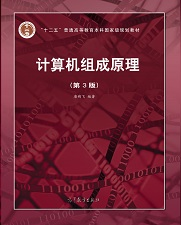
这篇blog用来记录我学习《计算机组成原理 第三版》（唐朔飞 箸）这本书的笔记，同时也希望能对阅读这片文章的你有所帮助。
第一篇 概论
本篇主要介绍计算机系统的基本组成、应用与发展，并通过对本书结构的介绍，指出这本书的基本思路。
第一章 计算机系统概论
1.1 计算机系统简介
1.1.1 计算机软硬件概念
计算机系统由“软件”和“硬件”两大部分组成。
软件：计算机系统操作有关的计算机程序、规程、规则，以及可能有的文件、文档及数据。------百度百科
硬件：计算机系统中由电子，机械和光电元件等组成的各种物理装置的总称。这些物理装置按系统结构的要求构成一个有机整体为计算机软件运行提供物质基础。------百度百科
计算机的软件有可分为系统软件和应用软件两大类。
系统软件又称系统级程序，主要用来管理整个计算机系统，监视服务，是系统资源得到合理调度，高效运行。包括标准库、语言处理程序、操作系统、服务程序、数据库管理程序、网络程序等。
应用软件又称应用级程序，它是用户根据任务需要所编写的程序，如科学计算程序、数据处理程序等。
1.1.2 计算机系统的层次结构
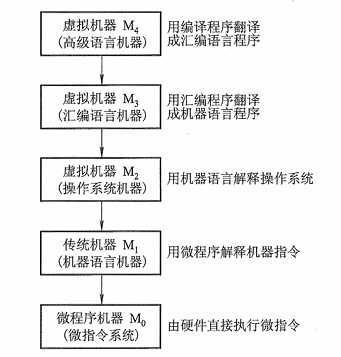
1.1.3 计算机组成和计算机体系结构
计算机体系结构是指那些能够被程序员所见到的计算机系统的属性，即概念性的结构与功能特性。计算机系统的属性通常是指用机器语言编程的程序员（也包括汇编语言程序员）所看到的传统机器的抽象的属性（包括指令集、数据类型、存储器寻址技术、I/O 机理等）。站在不同计算机系统层次上编程的程序员所看到的计算机属性也是各不相同的。
计算机组成是指如何实现计算机体系结构所体现的属性，它包含了许多对程序员来说是透
明的硬件细节。
1.2 计算机的基本组成
1.2.1 冯•诺依曼计算机的特点
冯•诺依曼机的特点：
- 计算机由运算器、存储器、控制器、输入设备和输出设备五大部件组成。
- 指令和数据以同等地位存放千存储器内，并可按地址寻访。
- 指令和数据均用二进制数表示。
- 指令由操作码和地址码组成，操作码用来表示操作的性质，地址码用来表示操作数在存
储器中的位置。 - 指令在存储器内按顺序存放。通常，指令是顺序执行的，在特定条件下，可根据运算结果
或根据设定的条件改变执行顺序。 - 机器以运算器为中心，输入输出设备与存储器间的数据传送通过运算器完成。
1.2.2 计算机的硬件框图
典型的冯•诺依曼机是以运算器为中心的，如图所示：
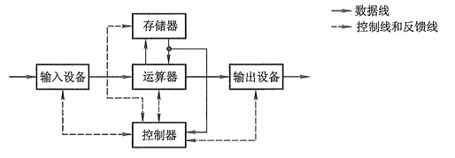
但现代计算机是以存储器为中心的，如下图：
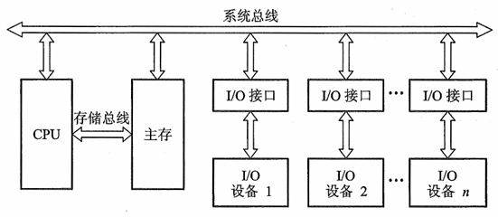
图中各部件的功能如下：
- 运算器用来完成算术运算和逻辑运算，并将运算的中间结果暂存在运算器内。
- 存储器用来存放数据和程序。
- 控制器用来控制、指挥程序和数据的输入、运行以及处理运算结果。
- 输入设备用来将人们熟悉的信息形式转换为机器能识别的信息形式，常见的有键盘、鼠
标等。 - 输出设备可将机器运算结果转换为人们熟悉的信息形式，如打印机输出、显示器输
出等。
由于运算器和控制器合称CPU，输入设置与输出设备合称I/O设备，于是，如下图，现代计算机可认为由三大部分组成：CPU、I/0设备及主存储器(Main Memory, MM)。CPU 与主存储器合起来又可称为主机，I/O 设备又可称为外部设备。
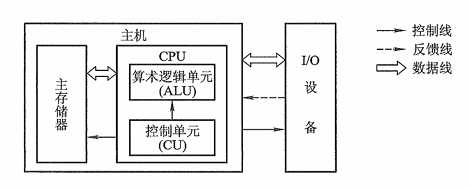
上图中的主存储器是存储器子系统中的一类，用来存放程序和数据，可以直接与 CPU 交换信息。另一类称为辅助存储器，简称辅存，又称外存。
算术逻辑单元(Arithmetic Logic Unit, ALU) 简称算逻部件，用来完成算术逻辑运算。控制单元(Control Unit, CU) 用来解释存储器中的指令，并发出各种操作命令来执行指令。ALU 和 CU 是 CPU 的核心部件。
1.2.3 计算机的工作步骤
用计算机解决一个实际问题通常包含两大步骤：上机前的各种准备和上机运行。
-
上机前的准备
- 建立数学模型
- 确定计算方法
- 编制解题程序
-
计算机的工作过程
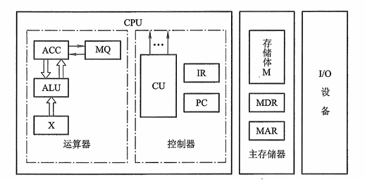
-
主存储器
主存储器（简称主存或内存）包括存储体M、各种逻辑部件及控制电路等。存储体由许多存储单元组成，每个存储单元又包含若干个存储元件（或称存储基元、存储元），每个存储元件能寄存一位二进制代码“0”或“1”。一个存储单元可存储一串二进制代码，称这串二进制代码为一个存储字，这串二进制代码的位数称为存储字长。存储字长可以是 8 位、16 位或 32 位等。一个存储字可代表一个二进制数，也可代表一串字符，还可代表一条指令。每个存储单元一个编号，称为存储单元的地址号。
主存的工作方式就是按存储单元的地址号来实现对存储字各位的存（写入）、取（读出）。这种存取方式称为按地址存取方式，即按地址访间存储器（简称访存）。
由于指令和数据都由存储单元地址号来反映，因此，取一条指令和取一个数据的操作完全可视为是相同的，这样就可使用一套控制线路来完成两种截然不同的操作。
为了能实现按地址访间的方式，主存中还必须配置两个寄存器 MAR 和 MDR。 MAR(Memory Address Register) 是存储器地址寄存器，用来存放欲访间的存储单元的地址，其位数对
应存储单元的个数（如 MAR 为 10 位，则有 210= 1 024 个存储单元，记为 1 K)。 MDR(Memory Data Register) 是存储器数据寄存器，用来存放从存储体某单元取出的代码或者准备往某存储单元存入的代码，其位数与存储字长相等。当然，要想完整地完成一个取或存操作，CPU 还得给主存加以各种控制信号，如读命令、写命令和地址译码驱动信号等。随着硬件技术的发展，主存都制成大规模集成电路的芯片，而将 MAR 和 MDR 集成在 CPU 芯片中。 -
运算器
运算器最少包括3个寄存器（现代计算机内部往往设有通用寄存器组）和一个算术逻辑单元(ALU) 。其中 ACC(Accumulator) 为累加器，MQ(Multiplier-Quotient Register) 为乘商寄存器，X为操作数寄存器。
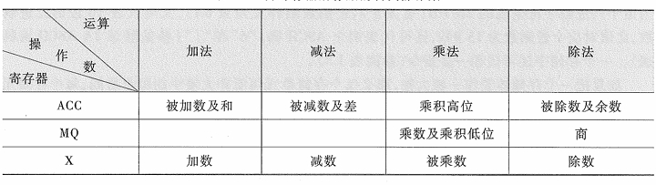
不同机器的运算器结构是不同的。上图图所示的运算器可将运算结果从 ACC 送至存储器中的 MDR；而存储器的操作数也可从 MDR 送至运算器中的 ACC、MQ 或 X。有的机器用 MDR 取
代 X 寄存器。 -
控制器
控制器是计算机的神经中枢，由它指挥各部件自动、协调地工作。具体而言，它首先要命令存储器读出一条指令，称为取指过程（也称取指阶段）。接着，它要对这条指令进行分析，指出该
指令要完成什么样的操作，并按寻址特征指明操作数的地址，称为分析过程（也称分析阶段）。最后根据操作数所在的地址以及指令的操作码完成某种操作，称为执行过程（也称执行阶段）。以上3条就是通常所说的完成一条指令操作的取指、分析和执行3个阶段。控制器由程序计数器(Program Counter, PC) 、指令寄存器(Instruction Register, IR) 以及控制单元(CU)组成。PC 用来存放当前欲执行指令的地址，它与主存的 MAR 之间有一条直接通路，且具有自动加 1 的功能，即可自动形成下一条指令的地址。IR 用来存放当前的指令，IR 的内容来自主存的 MDR。IR 中的操作码(OP(IR))送至 CU，记作
OP(IR)->CU，用来分析指令；其地址码(Ad(IR))作为操作数的地址送至存储器的 MAR，记作Ad(IR)->MAR。 CU 用来分析当前指令所需完成的操作，并发出各种微操作命令序列，用以控制所有被控对象。 -
I/O
I/0 子系统包括各种 I/0 设备及其相应的接口。每一种 I/0 设备都由 I/0 接口与主机联系，它接收 CU 发出的各种控制命令，并完成相应的操作。例如，键盘（输入设备）由键盘接口电路与主机联系；打印机（输出设备）由打印机接口电路与主机联系。
-
1.3 计算机硬件的主要技术指标
1.3.1 计算机字长
机器字长是指 CPU一次能处理数据的位数，通常与 CPU 的寄存器位数有关。字长越长，数的表示范围越大，精度也越高。
机器字长会影响机器的运算速度和硬件的造价。
1.3.2 存储容量
存储器的容量应该包括主存容量和辅存容量。
主存容量是指主存中存放二进制代码的总位数。即
存储容量＝存储单元个数*存储字长
MAR 的位数反映了存储单元的个数，MDR 的位数反映了存储字长。
现代计算机中常以字节数来描述容量的大小
1.3.3 运算速度
现在机器的运算速度普遍采用单位时间内执行指令的平均条数来衡量，并用 MIPS(Million Instruction Per Second ，百万条指令每秒）作为计量单位。也可以用 CPI(Cycle Per Instruction) 即执行一条指令所需的时钟周期（机器主频的倒数）数，或用 FLOP(Floating Point Operation Per Second ，浮点运算次数每秒）来衡量运算速度。
1.4 本书结构
各章节联系图：
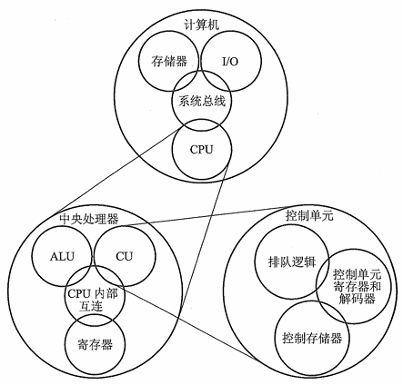
第二章 计算机的发展及应用
第二篇 计算机系统的硬件结构
计算机硬件系统由中央处理器、存储器、I/O 系统以及连接它们的系统总线组成。本篇介绍系统总线、存储器和 I/O 系统三部分，中央处理器将在第 3 篇单独讲述。
第三章 系统总线
3.1 总线的概念
定义：总线是连接多个部件的信息传输线，是各部件共享的传输介质。
特点：当多个部件与总线相连时，如果出现两个或两个以上部件同时向总线发送信息，会导致信号冲突，传输无效。在某一时刻，只允许有一个部件向总线发送信息，而多个部件可以同时从总线上接收相同的信息。
单总线结构的计算机，如下图所示：
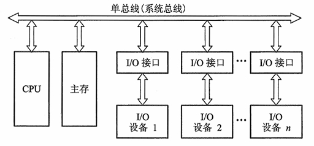
特点：CPU、主存和 I/O 设备（通过 I/O 接口）都挂到一组总线上。
优点：是当 I/O 设备与主存交换信息时，原则上不影响 CPU 的工作，CPU 仍可继续处理不访问主存或 I/O 设备的操作，这就使 CPU 工作效率有所提高。
缺点：因只有一组总线，当某一时刻各部件都要占用总线时，就会发生冲突。
举例：PDP-11 和国产 DJS183 机。
面向 CPU 的双总线结构的计算机，如下图所示：
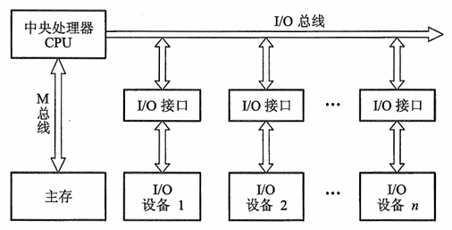
特点：其中一组总线连接 CPU 和主存，称为存储总线(M 总线）；另一组用来建立 CPU 和各 I/O 设备之间交换信息的通道，称为输入输出总线(I/O 总线）。
优点：各种 I/O 设备通过 I/O 接口挂到 I/O 总线上，更便于增删设备。
缺点：在 I/O 设备与主存交换信息时仍然要占用 CPU，会影响 CPU 的工作效率。
以存储器为中心的双总线的计算机，如下图所示：
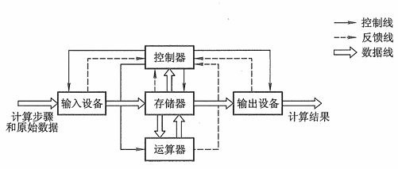
特点：是在单总线基础上又开辟出的一条CPU 与主存之间的总线，称为存储总线。
优点：存储总线速度高，只供主存与 CPU 之间传输信息，既提高了传输效率，又减轻了系统总线的负担，还保
留了 I/0 设备与存储器交换信息时不经过 CPU。
举例：国产 DJS184机。
3.2 总线的分类
按数据传送方式可分为并行传输总线和串行传输总线。在并行传输总线中，又可按传输数据宽度分为 8 位、16 位、32 位、64 位等传输总线。若按总线的使用范围划分，则又有计算机（包括外设）总线、测控总线、网络通信总线等。下面按连接部件不同，介绍三类总线。
3.2.1 片内总线
定义：芯片内部的总线。
3.2.2 系统总线(板级总线)
定义：CPU、主存、I/O 设备（通过 I/O 接口）各大部件之间的信息传输线。
分类：按系统总线 传输信息 的不同分为三类：数据总线、地址总线和控制总线。
-
数据总线
数据总线用来传输各功能部件之间的数据信息，它是双向传输总线，其位数与机器字长、存储字长有关，一般为 8 位、16 位或 32 位。数据总线的位数称为数据总线宽度，它是衡量系统性能的一个重要参数。如果数据总线的宽度为8位，指令字长为 16 位，那么，CPU在取指阶段必须两次访问主存。
-
地址总线
地址总线主要用来指出数据总线上的源数据或目的数据在主存单元的地址或 I/O 设备的地址。地址总线上的代码是用来指明 CPU 欲访问的存储单元或 I/O 端口的地址，由 CPU 输出，单向传输。地址线的位数与存储单元的个数有关，如地址线为 20 根，则对应的存储单元个数为 220。
-
控制总线
此控制总线是用来发出各种控制信号的传输线。通常对任一控制线而言，它的传输是单向的。例如，存储器读／写命令或 I/O 设备读／写命令都是由 CPU 发出的。但对于控制总线总体来说，又可认为是双向的。例如，当某设备准备就绪时，便向 CPU 发中断请求；当某部件（如 DMA 接口）需获得总线使用权时，也向 CPU 发出总线请求。此外，控制总线还起到监视各部件状态的作用。例如，查询该设备是处于＂忙＂还是＂闲＂，是否出错等。因此对 CPU 而言，控制信号既有输出，又有输入。
常见的控制信号如下：
- 时钟：用来同步各种操作。
- 复位：初始化所有部件。
- 总线请求：表示某部件需获得总线使用权。
- 总线允许：表示需要获得总线使用权的部件已获得了控制权。
- 中断请求：表示某部件提出中断请求。
- 中断响应：表示中断请求已被接收。
- 存储器写：将数据总线上的数据写至存储器的指定地址单元内。
- 存储器读：将指定存储单元中的数据读到数据总线上。
- I/0 读：从指定的 I/0 端口将数据读到数据总线上。
- I/0 写：将数据总线上的数据输出到指定的 I/0 端口内。
- 传输响应：表示数据已被接收，或已将数据送至数据总线上。
💬 评论